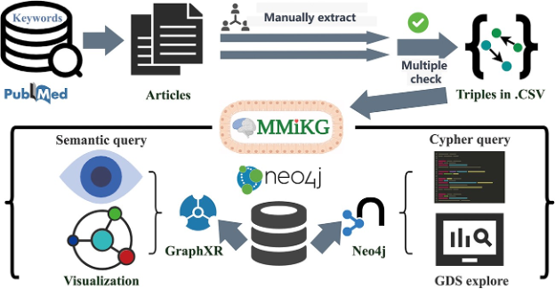
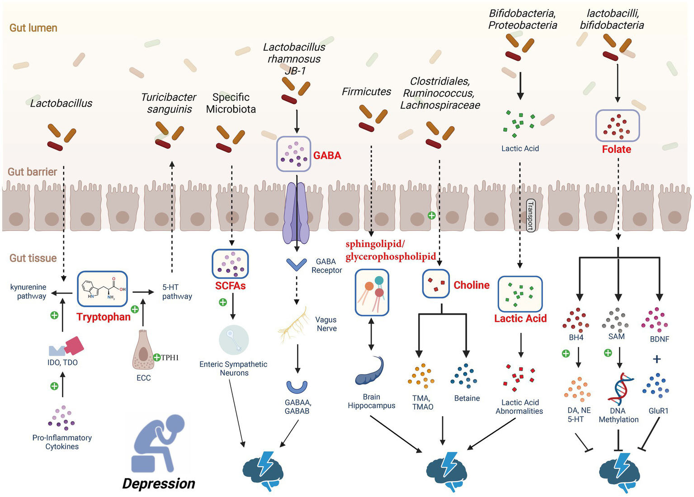
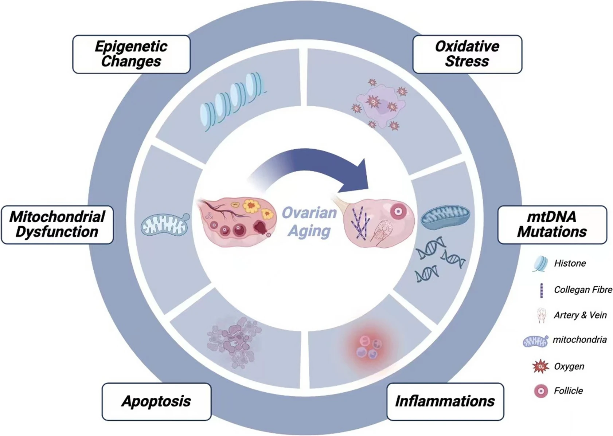
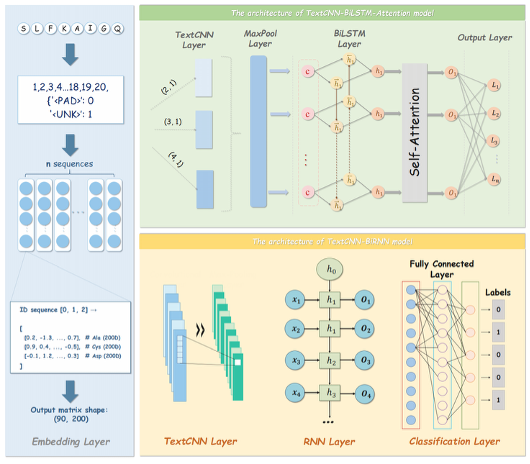
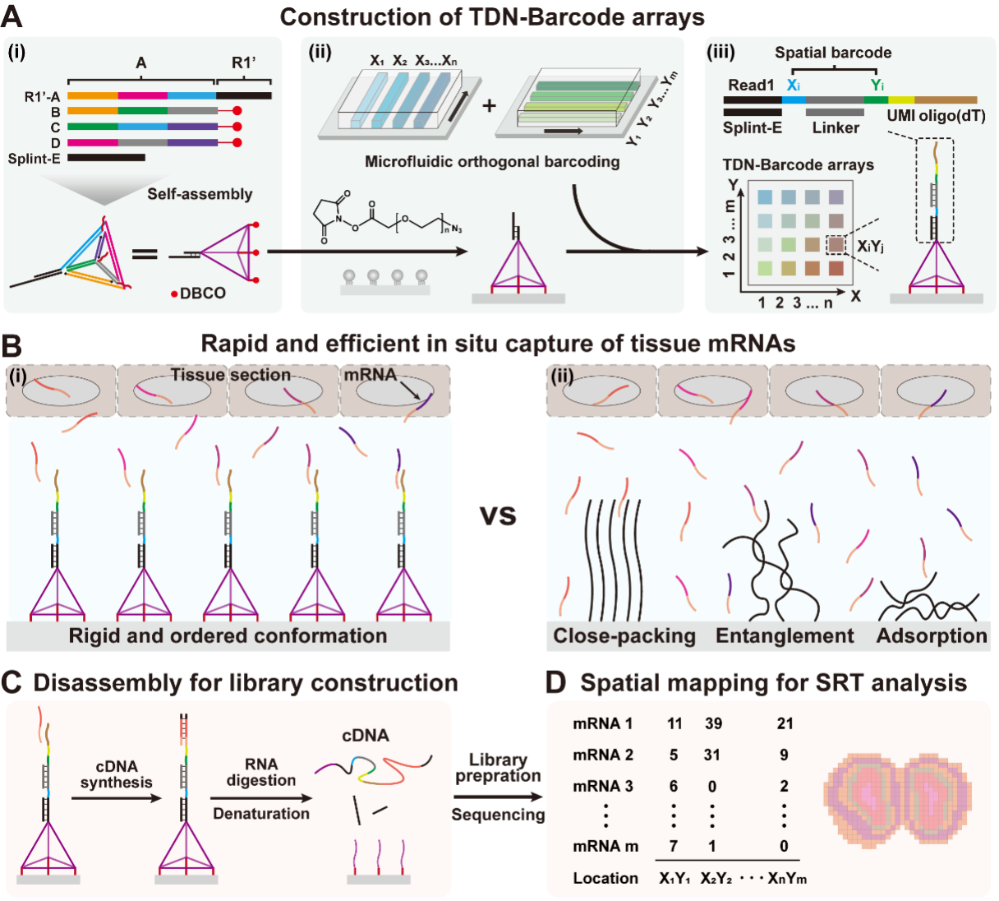

About Me
Hi, I am Zhaoqi Song (宋兆祺), currently an M.Eng. student in Bioengineering at Xiamen University(厦门大学), expected to graduate in June 2027. I am advised by Prof. Chaoyong Yang, a National Science Fund for Distinguished Young Scholars holder.
Before joining Xiamen University(厦门大学), I received my Bachelor's degree in Bioinformatics from Fujian Medical University in June 2024.
My research interests focus on computational biology, bioinformatics, deep learning, and spatial transcriptomics. I mainly work with Python, R, Linux Shell, and PyTorch, and I am interested in building multimodal and AI-driven frameworks for spatial omics analysis, disease modeling, and biomedical discovery.
I am particularly interested in integrating spatial transcriptomics, histology imaging, and other multimodal molecular data to better characterize tissue architecture, molecular heterogeneity, and cell-cell interactions.
🔬 Research Interests
- Computational Biology and Bioinformatics
- Deep Learning for Biomedical Data
- Spatial Transcriptomics and Spatial Omics
- Multimodal Learning with Histology and Molecular Imaging
- Cancer Classification, Prognosis, and Translational Bioinformatics
📝 Publications
Peer-reviewed publications

MMiKG: a knowledge graph-based platform for path mining of microbiota–mental diseases interactions
Sun H*, Song Z*. (2023)
- Briefings in Bioinformatics, 24(6): bbad340.
- Built a knowledge graph-based platform for path mining of microbiota–mental disease interactions.

Depression-associated gut microbes, metabolites and clinical trials
Wang M*, Song Z*. (2024)
- Frontiers in Microbiology, 15:1292004.
- Reviewed gut microbes, metabolites, and clinical trials associated with depression.

Impact of NAD+ metabolism on ovarian aging
Liang J, Huang F, Song Z, et al. (2023)
- Immunity & Ageing, 20(70).
- Studied the impact of NAD+ metabolism on ovarian aging.

DeepALM: A Context-Aware Deep Learning Framework for Antimicrobial Peptide Prediction
Wang M*, Song Z*
- Current Bioinformatics. Accepted.
- Developed a context-aware deep learning framework for antimicrobial peptide prediction.
Patent
- Song Z, Sun H, Chen Q, Wang M, Yang F. (2023). A knowledge graph construction method targeting the gut-brain axis. China Patent No. 202310235160.3.
Manuscripts in preparation / under review
- Zou Y*, Song Z*. SMART-Spatial: Super-resolution Multimodal Atlas Reconstruction-driven Transcriptomics for spatial RNA sequencing. In preparation.
- Xie J*, Song Z*. Transformer-based Cancer of Unknown Primary Classification and Prognosis. In preparation.
- Shi W*, Cao J*, Song Z*. Tetrahedral DNA Nanoframe Arrays Enhance mRNA Capture Kinetics in Spatial RNA Sequencing. In preparation.
* indicates co-first author
💻 Research Experience

AI-driven virtual spatial proteomics via spatial transcriptomics
and multimodal tissue imaging
Jan 2026 – Present
Xiamen University, Tan Kah Kee Innovation Laboratory
Supervisors:
Prof. Mengsha Tong,
Prof. Chaoyong Yang
- Developed a multimodal framework integrating ISS, H&E histology, and imaging mass cytometry (IMC).
- Built deep generative models to predict missing protein channels from spatial transcriptomic data.
- Supported downstream analyses of spatial proteomic heterogeneity and cell–cell interactions.

SMART:
Multimodal Fusion-Based Super-Resolution Enhancement
for Spatial Omics
Jul 2025 – Present
Xiamen University,
Tan Kah Kee Innovation Laboratory
Supervisors:
Asst. Prof. Mengsha Tong,
Prof. Chaoyong Yang
- Developed a multimodal framework for high-resolution gene expression mapping using in situ sequencing (ISS).
- Improved cell-type annotation and tissue structure delineation.
- Supported biomedical discovery by revealing spatial heterogeneity and intercellular communication.

Transformer-based Cancer of Unknown Primary
Classification and Prognosis
Oct 2024 – Present
Xiamen University,
National Institute for Data Science in Health and Medicine
Supervisors:
Prof. Mengsha Tong,
Prof. Chaoyong Yang
- Advanced CUP classification through deep learning and multi-omics integration.
- Collected and preprocessed TCGA, ICGC and GEO datasets.
- Trained BPformer with pathway-based embeddings.

Talent-seq enhances mRNA capture efficiency
in spatial RNA sequencing
Aug 2024 – Present
Shanghai Jiao Tong University,
Renji Hospital
Supervisor:
Prof. Chaoyong Yang
- Conducted upstream analysis and saturation calculation.
- Performed scRNA-seq projection and benchmarking.
- Evaluated improved mRNA capture sensitivity and spatial resolution.
🎖 Awards
- Wang Deyao Outstanding Student Scholarship, Xiamen University
- Outstanding Graduate, Fujian Medical University
- Outstanding Student Scholarship, Fujian Medical University — Second-Class Scholarship (2023), Third-Class Scholarship (2024)
- Merit Student, Fujian Medical University
- Mathematical Contest in Modeling (MCM/ICM) — Honorable Mention (Top 20%), 2023
- National Undergraduate Mathematical Contest in Modeling (CUMCM) — Provincial First Prize (2023), Provincial Second Prize (2022)
- FLTRP·Cup National English Public Speaking Contest — Provincial First Prize (2022), Provincial Third Prize (2021)
- National English Competition for College Students (NECCS) — Third Prize, 2022
📖 Education
- Expected June 2027, Xiamen University, M.Eng. in Bioengineering
GPA: 3.42 / 4.0 - June 2024, Fujian Medical University, Bachelor's degree in Bioinformatics
GPA: 3.51 / 4.0
🎓 Workshop and Conference
- 2025, Chinese Institute for Brain Research (CIBR) Winter School, Peking University, Beijing, China
- 2023, Visiting Research Intern, Department of Bioinformatics, Prof. Yong Zhang Laboratory, Tongji University, Shanghai, China
- 2023, Outstanding Undergraduate Summer Camp, Shanghai Institute of Precision Medicine (SHIPM), Shanghai Jiao Tong University, Shanghai, China
- 2023, Outstanding Undergraduate Summer Camp, Liangzhu Laboratory, Zhejiang University, Hangzhou, China
- 2023, Outstanding Undergraduate Summer Camp, School of Basic Medical Sciences, Southern Medical University, Guangzhou, China
📫 Contact
- Email: johs51653@gmail.com
- Phone: (+86) 15260873328
- Location: Xiamen, China